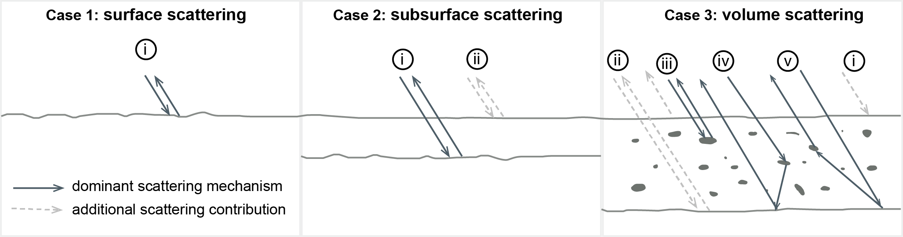
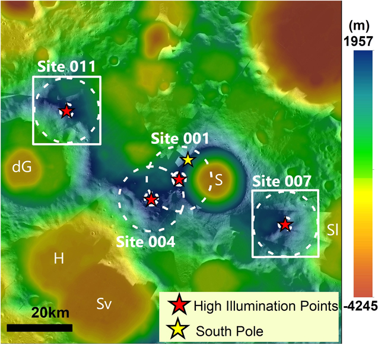

research
My research focuses on understanding how volcanism modifies the surfaces of silicate bodies such as Venus, Earth, and Mars. I study the physical process associated with volcanic activity processes using a combination of physical volcanology, radar remote sensing and a tiny bit terrestrial field work. Listed below are projects that I have worked on.
Radar mapping of Arsia Mons caldera on Mars

Radargrams and clutter simulations from tracks 13952 and 26413 over the caldera. Peach colored arrows in the radargrams point to the reflectors mapped as subsurface interfaces.
The caldera of Arisa Mons, the southernmost and the most evolved of the Thatrsis Montes on Mars, has several small shields, fissures and lava flows on its floor. These features were found to be ~150 Myr old, indicating some of the most recent volcanic activity on Mars. SHAllow RADar data over this area showed several time-delay reflectors indicating different density lithologies in the shallow subsurface (up to 120 km depths). We mapped individual reflectors at different delay times and used Bayesian inversion techniques to determine dielectric propoerties of the subsurface lithologies from the mapped reflectors. Most of the reflectors were consistent with dense, lossy lava flows. However, a specific group of reflectors in the southern region of the caldera was overlain by low density material such as unconsolidated sediments or pyroclastic material up to 60 m thick. The inferred radar properties provide evidence for atleast one previous episode of explosive activity in the caldera; it is likely that the caldera experienced many transitions between effusive and explosive activity in the past. This work has been discussed in detail in this paper .
Pyroclastic Density Currents on Venus

Schematic reperesntation of the dense PDC model along one horizontal axis.
Pyroclastic activity on Venus is thought to be limited because of 1) the high atmospheric T/P which reduces magmatic volatile exsolution and 2) high atmospheric density which makes it hard to sustain buoyant ash plumes. It has been hypothesized that volatile contents exceeding 2-5% could cause explosive disruption of magma at the resurface. Resulting eruption columns are likelier to collapse (due to the hot and dense ambient atmosphere) feeding pyroclastic density currents (PDCs). Several deposits with high radar returns near volcanic summits on Venus have been proposed to be formed from PDCs. These deposits have very long runouts and large spatial extents, typical of ancient PDCs on Earth not observed in current times. I model PDCs under Venus conditions to investigate their exceptional mobility, interaction with topography and what they tell us about volcanic extrusion rates and eruption conditions in the past. PDCs are thought to travel either as dense particulate flows driven by gravity or dilute turbulent currents driven by density contrast with the surrounding atmosphere. See our JGR paper that talks about how far dense PDCs can flow on Venus, why flow fluidization is important for particle-rich PDCs on Venus, and what this means for eruption conditions at the vent.
SAR backscatter modeling of planetary surfaces
Schematic representation of scattering from different types of subsurface models
Synthetic Aperture Radar (SAR) data of planetary surfaces contain information about the upper 10s of centimeters of the subsurface (depending on the radar wavelength). The measured power and polarization state of the return signal is sensitive to the observing geometry, surface reflectivity and roughness, thickness of the layers within the signal penetration depth, and loss of energy in the signal. Understanding how a radar wave responds to variations in these parameters is important for interpreting the radar echoes received from planetary surfaces. This can be done using radar scattering and emission models which describe radar wave propagation, backscatter and emission in from different synthetic a geologic medium. We used this technique to compute surface and volume scattering (and emission) of some of the Venusian PDC deposits, and used the results from the models to infer geologic and dielectric properties of the deposits. Our JGR paper contains more information on the model, the inferred deposit properties, and implications for pyroclastic flow emplacement conditions on Venus
Geologic investigations of two possible Artemis landing sites
This project was done as a part of LPI's (virtual) summer internship program 2020 in collaboration with Jordan Bretzfelder, Antonio Lang, and Nandita Kumari, under the supervisions of David Kring. We looked at two possible landing sites for the Artemis mission near the lunar south pole to assess the geological and ISRU potential, and EVA opportunities at these two locations. We processed LRO NAC EDRs for mapping boulder sizes and density distributions at high spatial resolutions of 50 cm/pix. We identified contiguous regions of terrain with slopes suitable for walking and roving using LRO LOLA digital elevation models (DEMs). We looked at how much sunlight different locations at these sites would receive at different times of the year using MoonTrek. We studied circular polarization ratio (CPR) data from LRO mini-RF to detect signatures of water ice. All of our findings on these two sites have been summarized in this PSJ article .
Left image: Location and extent of the potential landing sites studied.